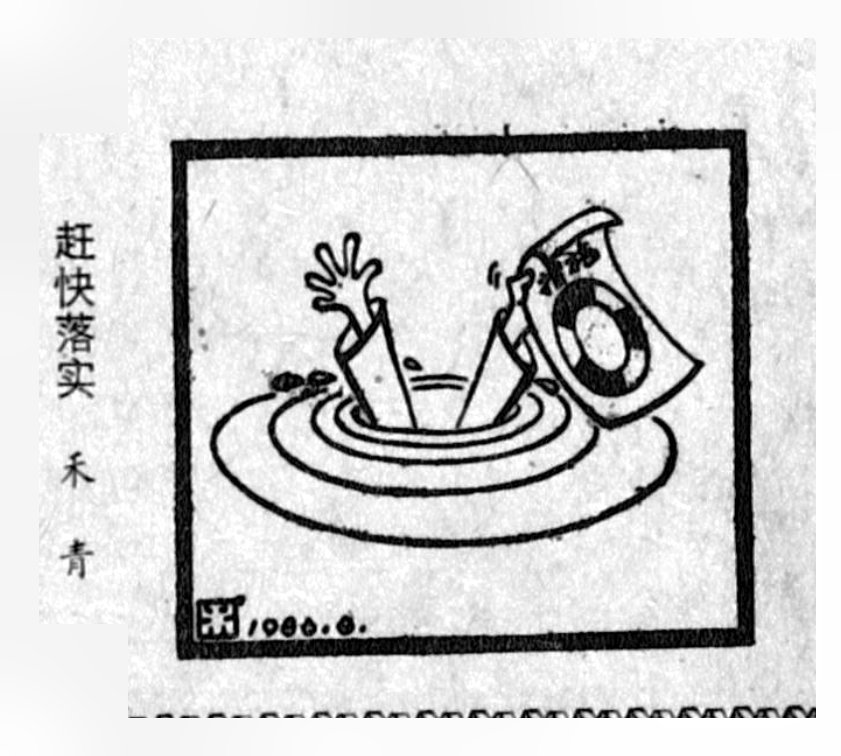

禾青 《人事》1986年第12期（总第15期），第46页
赶快落实
Implement It Quickly
- Text in the drawing
- (document bearing a life-ring)
- Description
- Only a drowning man's hands are still above water as a document printed with a life-ring drifts down beside him.
- Note
- 落实 ('implement') literally means 'to fall and become solid'.
- Artist
- He Qing 禾青
- Published in
- 《人事》1986年第12期（总第15期）, p. 46
- Themes
- Paperwork and documents · Bureaucratism

Cite
He Qing, “赶快落实” [Implement It Quickly], Renshi (Personnel) 《人事》, 1986, no. 12, p. 46.